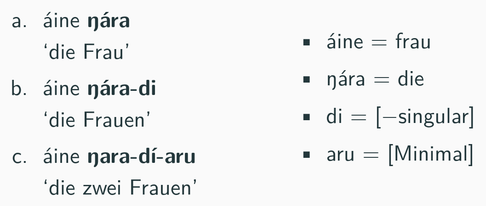

Genus
Theorie und Markierheit
13. Dezember 2019
Unser Typologie bis jetzt
- Unser Merkmale für Numerus und Person haben eine klare semantische Bedeutung.
- Bei Genus, die Situation ist nicht so klar.
- Wir haben gesehen, dass es ,,streng semantische Systeme'' gibt.
- Hier, semantische Merkmale passen.
- Aber, wir haben auch gesehen ,,formale Systeme'' und ,,überwiegend semantisce Systeme''.
- Wollen wir semantische Merkmale hier?
Sem vs. Morph
- Merkmale haben eine morphologische Exponent.
- Sie haben auch eine Bedeutung.
Numerus
Numerus
Merkmale
- Also, wir sagen, dass Merkmale haben eine semantische Teil und eine morphologische Teil.
- Normalerweise sind die Werte das Gleiche.
- Aber, für macnhe Merkmale nicht.
Ausnahme
- Mädchen im Deutschen.
- commitee Substantive im Englischen.
- ngwazi im Chichewa.
Ausnahme
- Und manche Merkmale haben kein Wert für entweder die semantische oder die morphologische Teil.
- z.B. pluarlia tantum Substantive
- scissors
- hersenen (Niederländisch)
Semantische Unterschieden in Genus
- lebende/nicht lebende
- rational/non–rational
- mensch/nicht–mensch
- Männer/andere
- Stark/schwach
- augmentative/diminutive
- männlich/andere
- Maskulinum/Femininum/kein-Geschlecht
Semantische Unterschieden in Genus
- Es gibt relativ wenig starke semantische Systeme.
- Für die meisten Sprache (mit Genus) sehen wir vielen Beispiele, die willkürlich sind.
- Aber, wir haben gesehen, dass normalerweise es einen semantischen Kern gibt.
- Also: sollen wir nur morphologische Merkmalen haben?
Drei Klasse
- Es gibt Evidenz für semantische Merkmale von Ellipse.
- Aber, nur für manche Substantive.
- Wir sehen dies mit Ellipse, wobei Wörter, die wir in einem Satz erwarten, sind nicht ausgesprochen.
Actress-Klasse
- Für andere Substantive gibt es ein Effekt.
- Hier sehen wir, dass ein maskulinum Substantiv erlaubt Ellipse von ein femininum Substantiv, aber nicht umgekehrt.
Actress-Klasse (B.P)
- Das Gleiche im brazilianischen Portugiesisch:
Actress-Klasse
- Und im Russischen:
- Es ist klar, dass die Femininum Genus hat eine klare semantische Bedeutung.
- Aber es scheint, dass Maskulinum bedeutet ,,entweder männlich oder weiblich.''
Markierheit
- Wir nennen diese Phänomen ,,Markierheit''.
- Es ist eine Begriff van die 1930er, von die berühmte Arbeit von Roman Jakobson und Nikolai Trubetzkoy.
- Es bedeutet, dass die Sprachmerkmalen sind charakterisiert durch Oppositionen.
- Aber, in einem Paar A und B (die steht in Oppsotion), entweder A oder B hat eine klare Definition.
Markierheit
Andere Effekte
- Weitere Evidenz
Ellipse
- Hier können wir sagen, dass Ellipse grammatisch ist, wenn die Beduetung der nicht gesprochene Element in der ausgesprochene Element enthalt wird.
- Also, in diesem Fall, müß die Genusmerkmale eine semantische Bedeutung haben.
Tante-Onkel Klasse
- Bedeutet immer Maskulinum entweder männlich oder weibliche Dinge?
- Für andere Substantive sehen wir dass, die Maskulinumform bedeutet nur männlich Einheiten.
- Die Femininumform bedeutet nur weibliche Einheiten.
Tante-Onkel Klasse
Tante-Onkel Klasse: Russischen
- Das Gleiche im Russischen:
Tante-Onkel Klasse: BP
- Und im brazilianischen Portugiesisch.

Tante~Onkel Klasse
Bobaljik & Zocca: Erklärung
- Um diese Benehmens zu erklären, Bobaljik & Zocca (2008) geben eine semantische Erklärung.
- Hier müß ,,Maskulinum'' eine klare Bedeutung haben.
Medico-Klasse
- Zum Schluss hat Genus kein Effekt für manche Substantive.
- In brazilianischen Portugiesisch:
Medico-Klasse
- Für diese Substantive sagen Bobaljik & Zocca, dass Genus ist Flexionsmorphologie statt Derivationsmorphologie.